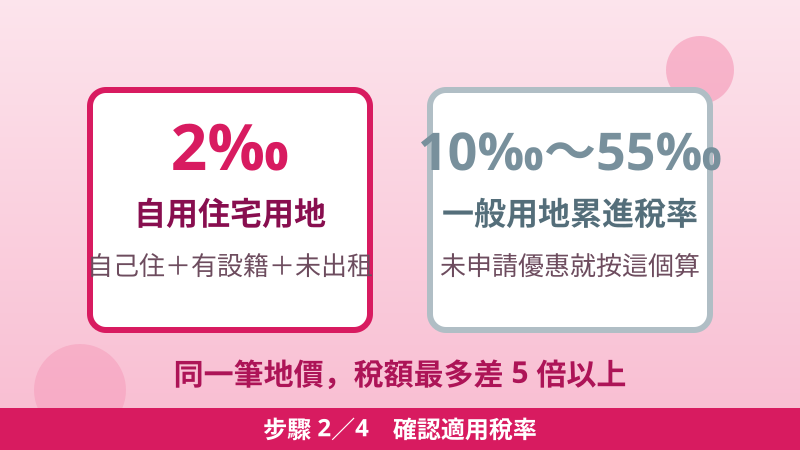

115 年地價稅 11 月開徵：繳納期限、2‰ 自用住宅優惠、收到稅單先核對 3 件事
115 年度地價稅將於 11 月 1 日開徵，繳納期限至 11 月 30 日止。地價稅是按年課徵的地方稅，納稅義務基準日是每年的 8 月 31 日——以當天土地登記簿上記載的所有權人為準，繳交當年全年的地價稅。收到稅單先別急著繳，先看懂稅率欄：同樣一筆土地，適用自用住宅優惠稅率 2‰ 還是一般用地稅率，稅額最多可以差 5 倍以上。
同一縣市內的土地採「總歸戶制」，只會收到 1 張繳款書
稅率差多少？先看這張對照表
地價稅按土地所有權人在同一縣市內的土地地價總額計算，稅率依土地使用情形而定：
| 土地用途 | 稅率 | 說明 |
|---|---|---|
| 自用住宅用地 | 2‰（千分之二） | 符合資格並經核准，不累進 |
| 一般用地 | 10‰～55‰ | 基本稅率 10‰，超過累進起點地價分級累進，最高 55‰ |
試算給你看：課稅地價同樣是 100 萬元，按一般用地基本稅率 10‰ 計算是 10,000 元；適用自用住宅優惠稅率 2‰ 只要 2,000 元，一筆就差 8,000 元。如果地價總額超過累進起點，差距還會更大——所以收到稅單第一件事，就是確認自己是不是用 2‰ 在繳。
自用住宅優惠 2‰：要同時符合 4 個條件
符合自住條件，不代表自動享有優惠——必須符合以下要件，並向地方稅稽徵機關提出申請、經核准後才適用：
- 設籍：土地所有權人或其配偶、直系親屬於該地辦竣戶籍登記。
- 房屋所有權：土地上的房屋屬於土地所有權人或其配偶、直系親屬所有。
- 用途：住宅用地，且無出租或供營業使用。
- 面積與處數：都市土地面積未超過 3 公畝（300 平方公尺）部分、非都市土地未超過 7 公畝（700 平方公尺）部分適用；土地所有權人與其配偶及未成年受扶養親屬，以一處為限。超過面積的部分，仍按一般稅率課徵。
另外提醒：房子已經按住家用稅率課徵房屋稅，不代表土地自動適用自用住宅地價稅——兩者法律依據不同（房屋稅條例 vs 土地稅法），土地還是要另外提出申請才行。
收到稅單，四步驟處理
步驟 1收到稅單先核對
核對納稅義務人姓名、課稅年別、稅目與應繳金額是否正確，並看稅率欄：是自用住宅用地 2‰，還是一般用地稅率。

步驟 2確認適用稅率
自住卻被按一般稅率課徵，先查戶籍與使用情形：是不是全戶遷出、改出租或營業了，或是新取得土地還沒申請優惠。
步驟 3選對管道繳納
稅額 3 萬元以下可到四大超商臨櫃繳納；也可透過金融機構、ATM、信用卡、行動支付或地方稅網路申報作業系統線上查繳。超商繳稅務必拿回「繳款書收據聯」＋收銀機「交易明細表（小白單）」，兩者釘在一起保存 5 年。
步驟 4為明年省稅做準備
今年的優惠申請期限（開徵 40 日前，即 9 月 22 日）已過，現在申請要從明年才開始適用。已核准且用途未變更者，以後免再申請。
稅單有問題、沒收到稅單，怎麼辦
- 稅單記載、計算錯誤或重複課稅：在繳納期間內（11 月 30 日前）向地方稅稽徵機關申請查對更正。
- 對核定的應納稅額不服：可在繳納期間屆滿翌日起 30 日內，敘明理由並附證明文件申請復查。
- 沒收到稅單或遺失：向土地所在地的地方稅稽徵機關申請補發；也可持自然人憑證、已註冊健保卡或行動自然人憑證，到四大超商多功能事務機（Kiosk）連線查詢列印繳費單，或登入地方稅網路申報作業系統直接線上查繳。
- 繳稅有困難：因天災、事變等原因繳納困難者，可在繳納期間內向土地所在地的地方稅稽徵機關了解是否符合延期或分期繳納規定。
逾期不繳會怎樣
繳納期限至 11 月 30 日止。逾期繳納者，每逾 3 日按滯納數額加徵 1% 滯納金；逾 30 日仍未繳納者，移送強制執行。實務上滯納金最高加徵至 10%——也就是說，拖過 30 天不只多繳 1 成，還會被移送執行，千萬別放到過期。
今年才買房、繼承土地的人注意
土地若因買賣、贈與、繼承或信託移轉所有權，新所有權人即使符合自用住宅資格，也要重新提出申請，原所有權人的優惠不會自動延續。8 月 31 日前辦妥移轉登記者，由新所有權人繳當年全年地價稅；9 月 1 日以後才辦妥者，當年仍由原所有權人繳納。買賣雙方如何分攤，屬於契約約定，不影響稅捐機關認定的納稅義務人。
小提醒：本人遷入戶籍時，可透過戶政機關的跨機關通報服務一併申請地價稅自用住宅優惠；若是配偶或直系親屬遷入戶籍，土地所有權人仍須自行向稅捐機關提出申請。
📖 延伸閱讀：電費級距怎麼算才省？2026 最新電價表＋三招把度數壓回低級距 ／ 家庭年度省錢檢查清單：12 個項目逐項勾，漏領的補助比你想的多——水電、稅費、補助一次盤點完，荷包才真的省下來。
📎 資料來源
- 財政部稅務入口網（臺中市政府地方稅務局）「地價稅 11 月開徵・超商繳納關鍵 3 步驟」（115 年地價稅 11/1 開徵、繳納期限至 11/30、稅額 3 萬元以下可至超商繳納、雙憑證保存 5 年、免付費電話 0800-000321）：etax.nat.gov.tw
- 財政部稅務入口網（嘉義市政府財政稅務局）「遷戶籍與申辦地價稅優惠自用稅率可同時辦理」（自用住宅用地優惠稅率 2‰、一般用地稅率 10‰～55‰、每年開徵 40 日即 9 月 22 日前申請、逾期次年適用）：etax.nat.gov.tw
- 財政部主管法規共用系統《土地稅法》第 40 條（8 月 31 日為納稅義務基準日、11 月 1 日起一個月內一次徵收）及第 41 條（開徵 40 日前申請、逾期次年適用、已核定用途未變更者免再申請）：law-out.mof.gov.tw
- 《土地稅法》第 9 條、第 17 條（自用住宅用地定義、2‰ 計徵、都市土地 3 公畝／非都市土地 7 公畝上限、配偶及未成年受扶養親屬以一處為限）：全國法規資料庫
- 《稅捐稽徵法》第 20 條（每逾 3 日加徵 1% 滯納金、逾 30 日移送強制執行）及第 17 條（繳納期間內得申請查對更正）：全國法規資料庫
- 財政部稅務入口網問答「房子已按住家用稅率課房屋稅，土地是否不用再申請自用住宅地價稅？」（兩者法律依據不同，土地仍須另行申請）：etax.nat.gov.tw
最後查證日期：2026-10-25
免責聲明：本文僅供參考，地價稅的稅率、資格與申請方式以土地所在地地方稅稽徵機關最新公告及核定為準；如有疑問請撥打國稅及地方稅免付費電話 0800-000321 洽詢。